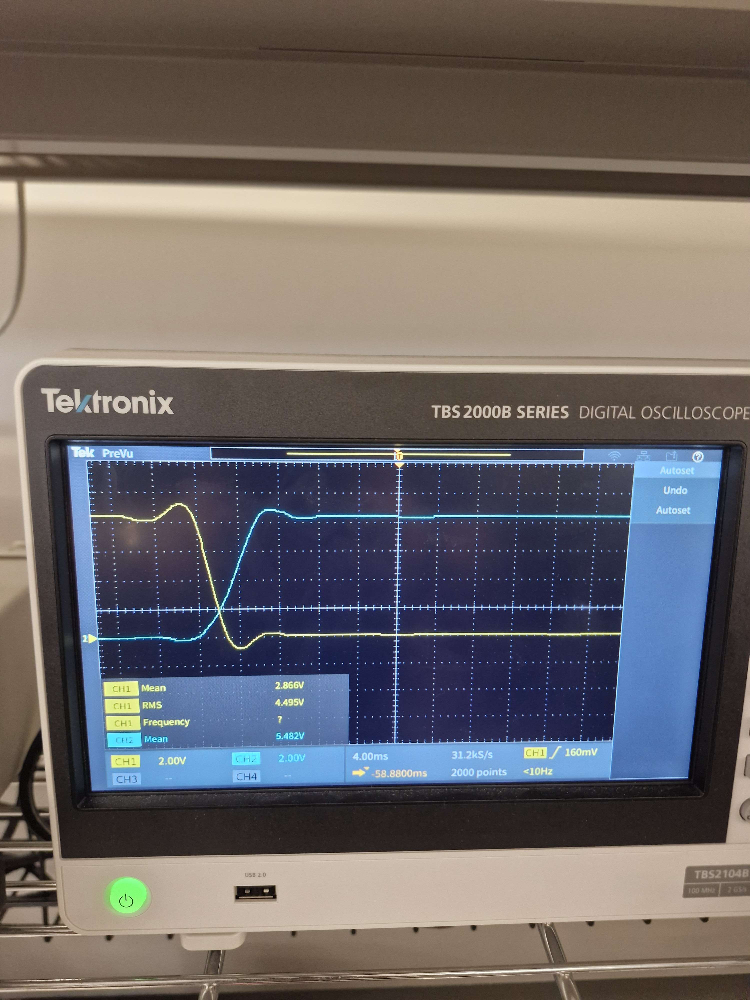
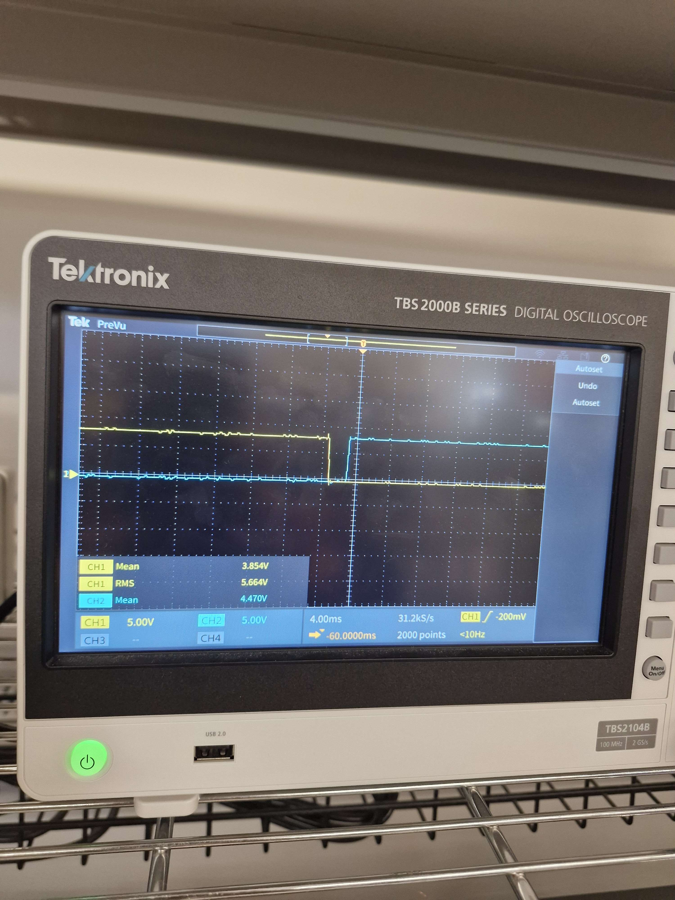

H-Bridge Motor Driver — Shoot-Through Rework
Discrete optocoupler-isolated H-bridge daughter board for the Robo Maestro piano-playing robot (ELEC 391). Drives a 324:1 geared DC motor at 12–16V / 8.5A stall, commanded by PID control from an STM32F446. After fabrication the board failed under PWM due to shoot-through; I diagnosed the failure with a scope, implemented a post-fabrication hardware rework on the populated PCB, and ran the final demo at 20 kHz PWM with no thermal issues.
Context
The H-bridge sits in the motor driver slot of the piano robot motherboard stack, driving lateral keyboard positioning under PID control from the STM32F446. The original schematic used one LTV816 optocoupler per leg driving a complementary PMOS (SUP70101EL-GE3) / NMOS (IRLB3813PBF) pair through a shared gate node — a classic naturally-complementary layout with one signal per leg.
The Failure
Bench testing with a DC power supply passed cleanly. The first PWM integration test at 10 kHz heated the H-bridge MOSFETs to the point of failure within seconds. One leg died on the first run.
To figure out why, I probed VGS on both FETs of one half-bridge leg with a Tektronix TBS2000B oscilloscope:
- Low-side (N-channel) — scope probe directly on the NMOS gate, source tied to GND.
- High-side (P-channel) — scope math channel
CH1 − CH2, with CH1 on the PMOS gate and CH2 on the PMOS source (HV+).

Before: both VGS traces transition at the same instant and cross through the mid-rail together. The X-shaped crossover region is the shoot-through window where both FETs are partially on and a low-resistance path exists from HV+ to GND. Repeats on every PWM edge.
Root Cause
The shared-gate complementary drive topology gives no margin for transition-time mismatch. Combined with the slow optocoupler and gate-capacitance math, every PWM edge forced both FETs through their linear region simultaneously:
- LTV816 transition time — up to 18 µs per the Lite-On datasheet. The phototransistor output can't slew faster than that regardless of what's driving it.
- Gate pull-up RC — 10k to HV+ charging the shared-gate node. The node carries both the PMOS gate (SUP70101EL-GE3, Ciss = 7 nF) and the NMOS gate (IRLB3813PBF, Ciss = 8.4 nF), for ~15 nF total. RC ≈ 150 µs, which is longer than the entire 100 µs PWM period at 10 kHz.
- Event rate — at 10 kHz PWM that's ~20,000 shoot-through events per second. Cumulative heating destroys the FETs within seconds.
DC testing missed all of this because a steady DC command only transitions once per direction change. One brief shoot-through pulse per direction change dissipates negligible energy — the FETs absorb it easily. Shoot-through is a transition-time problem; steady-state bench testing cannot see it.
As a stopgap to keep the board alive while probing and planning the fix, I dropped PWM to 2 kHz — cut the event rate 5x and bought enough thermal headroom to work on the board without frying more parts.
The Constraint
PCBs were already fabricated and populated. The fix had to be a bodge on the existing board, not a respin.
The Rework: Hardware PMOS Enable
Instead of reshaping gate transitions with asymmetric RC networks (my first proposal), I decoupled the PMOS gates from the PWM signal path entirely and gave the MCU direct on/off control of each PMOS through a second set of optocouplers:
- Cut the 4 PMOS gate traces — separate each PMOS gate from its shared leg signal.
- Add 2 new STM32 GPIOs as PMOS enable lines, one per half-bridge leg.
- Add 2 new single-channel optocouplers driven by the new GPIOs. Because the original LTV816s were through-hole, I tapped directly into their back-side pads on the existing PCB — no perfboard, no extra daughter board.
- Add pull-down resistors on the NMOS gates — with the shared-gate structure broken, the NMOS gates needed a defined OFF state when their optocoupler was idle.
Total signals to the H-bridge grew from 2 to 4 GPIOs: 2 PWM (NMOS low-side) plus 2 enable (PMOS high-side). Firmware guarantees no overlap by de-asserting both PMOS enables before any direction change — the PMOSes can only turn on when the MCU explicitly commands them, and the MCU never commands both simultaneously during a transition. No overlap is possible by construction. The new optos don't need to be fast because they only switch at direction changes, orders of magnitude slower than the 10–20 kHz PWM.

Back of the fabricated PCB after the rework. Two new single-channel optocouplers soldered directly onto the back-side through-hole pads of the original LTV816s, with bodge wires carrying the new enable signals to the now-isolated PMOS gates.
Result

After: one VGS is fully off before the other turns on, with a clear non-overlap gap between edges. Verified on both rising and falling transitions of the switching cycle.
With the rework in place, PWM returned to 10 kHz and then pushed to 20 kHz for the final performance. No MOSFET heating. No FET failures. The robot played the full song in the final demonstration with this reworked board in place.
Lessons Learned
- DC bench testing does not validate PWM operation. Shoot-through is a transition-time problem; steady-state tests cannot see it. PWM has to be in the first-integration test plan for any H-bridge.
- Optocouplers are too slow for direct MOSFET gate drive at PWM frequencies. LTV816 transitions (up to 18 µs) are more than an order of magnitude slower than the sub-microsecond edges 10–20 kHz PWM needs.
- Shared-gate complementary drive is fragile. Using one signal's polarity to turn one FET on and the other off leaves no margin for transition-time mismatch. Either drive each gate independently or use a dedicated half-bridge gate driver IC with built-in dead time.
- Reworks are feasible if the original layout is reworkable. The fact that the LTV816s were through-hole gave me back-side access to every relevant pin, which is what made this rework possible without a perfboard or a respin.
Repository
Full README, Altium v2 source files, scope captures, and the original planning sketch are in the dedicated hbridge-motor-driver-circuit repository.